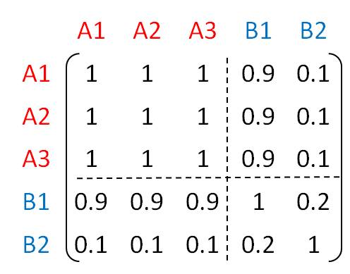
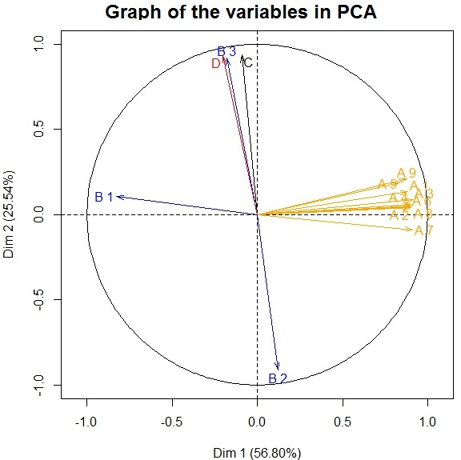

F. Husson website
IntroductionPrincipal Component AnalysisCorrespondence Analysis Multiple Correspondence Analysis ClusteringMultiple Factor AnalysisTo concludeForum
For each question, tick the correct answer or answers.
Q1) Adding weights to an MFA is equivalent to dividing all of the values in each given group by that of the first eigenvalue of the PCA run on the group’s variables is equivalent to dividing all of the values in each given group by the square root of the first eigenvalue of the PCA run on the group’s variables is equivalent to dividing all of the values of the variables in each given group by the group’s total inertia leads to each group of variables having the same total inertia means that the first axis of the PCA on each group of variables will end up with the same inertia
Q2) We run MFA on 2 groups of quantitative variables. The variables A1, A2 and A3 from the 1st group are identical, and highly correlated with the 1st variable of the 2nd group, while poorly correlated with the 2nd variable of the 2nd group. Correlations between all of the variables are shown in the following matrix.  With the weights from the MFA, the first axis of the MFA will be highly correlated with A1, A2, A3 and B1 the first axis of the MFA will be perfectly correlated (= 1 or -1) with A1, A2 and A3 the second axis of the MFA will be highly correlated with B2 the second axis of the MFA will be correlated with A1, A2 and A3
Q3) Suppose that we have run a PCA on a table with 14 variables and obtained the correlation graph shown below. The MFA weights have not been used but the variables are colored by group: 4 groups of variables with respectively 9, 3, 1 and 1 variables in them.  If we now apply the MFA weighting, the 1st axis of the MFA will be highly (positively or negatively) correlated with the nine variables A1, A2,..., A9 the 1st axis of the MFA will be highly (positively or negatively) correlated with the variables C, D, B2 and B3 the 2nd axis of the MFA will be highly (positively or negatively) correlated with the nine variables A1, A2,..., A9 the 2nd axis of the MFA will be highly (positively or negatively) correlated with B1 Q4) The first dimension of the MFA has inertia of about: 1 3 9 10
Q5) With the MFA weighting, a highly multidimensional group of variables (i.e., one for which a PCA would give many eigenvalues far from 0) will become less multidimensional a group with lots of variables will become more important in the analysis a one-dimensional group of variables will remain one-dimensional a highly multidimensional group of variables will remain highly multidimensional
Q6) Suppose that we have performed MFA on several groups of quantitative variables. The individuals plot represents the individuals as seen by all of the variables of all of the groups Individuals which have similar values for all variables are close to each other on the individuals plot Individuals on opposite sides of the first axis of the MFA have quite different values for all variables of all groups Individuals on opposite sides of the first axis of the MFA cannot have identical values for all of the variables of a certain group The individuals plot helps to visualize links between all of the variables of all of the groups
Score = Correct answers: